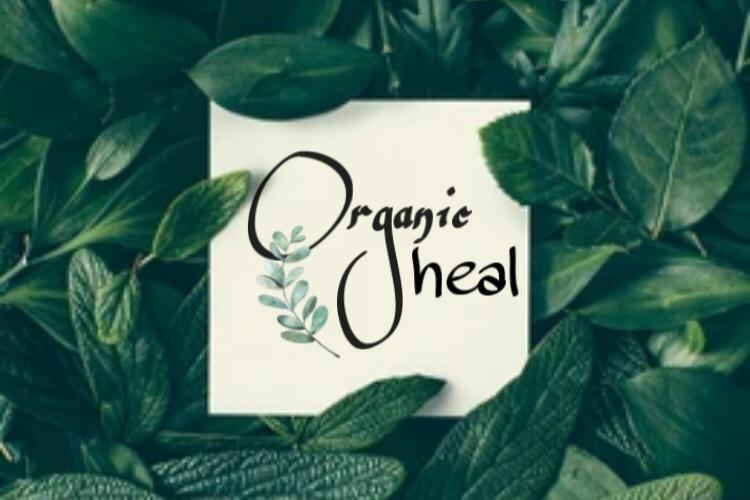

| HOME | ABOUT | PRODUCTS | CONTACT |
|---|
There are so many products in the beauty market, each with their own terminology - which can become very confusing when you’re trying to select a product which is right for you.
Organic heal is generally defined as skin care products which contain organically grown ingredients that are free from pesticides. Organic products are deemed to be more beneficial for the skin, as it is presumed there are little to no harsh chemical ingredients, and they are marketed thus.
In the last 10 years or so, the market has seen a sizeable shift towards organic skin care as consumers are becoming more savy and more conscious of what ingredients they’re putting on their skin, thanks to studies revealing the long-term effects of using harsh, chemical-based products.
‘Natural skincare’ comprises products which contain ingredients that come from natural sources but are not necessarily organically produced. They may contain preservatives and chemicals like many other products, however, their main ingredients may be plant-based and therefore marketed as ‘natural’. 'Organic heal' includes products comprised from naturally sourced ingredients that are produced without chemicals or pesticides.
